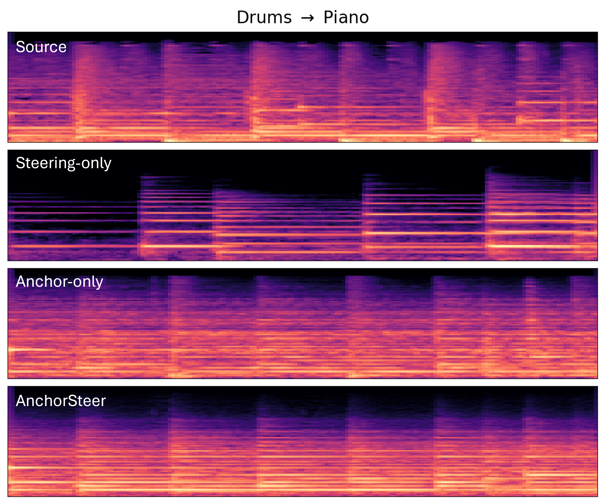
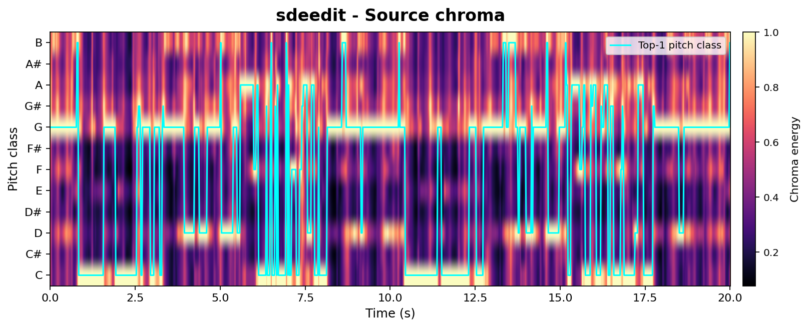
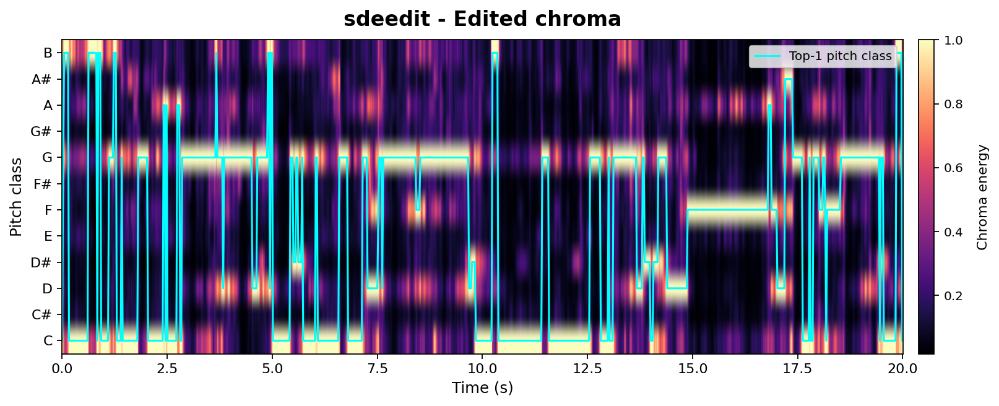
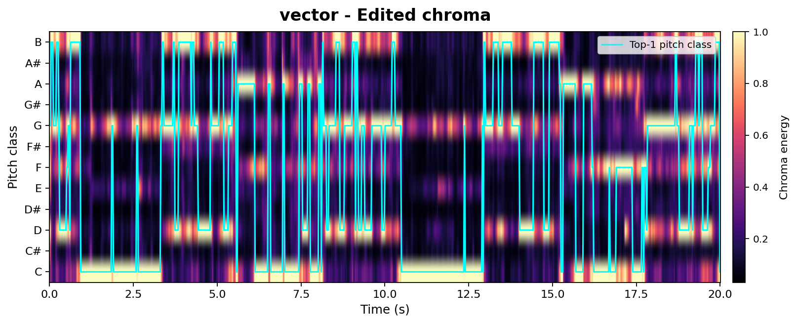
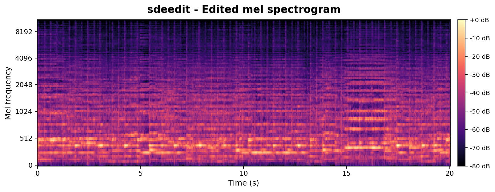
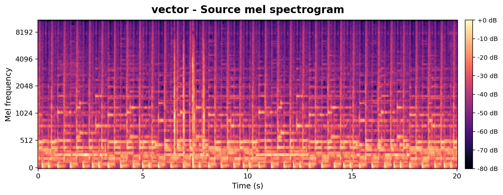
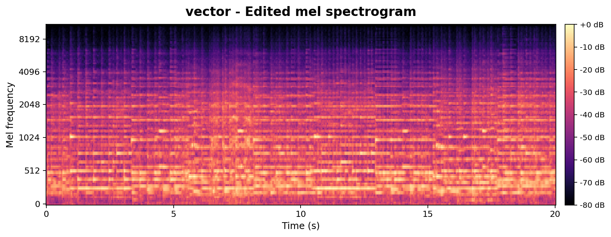
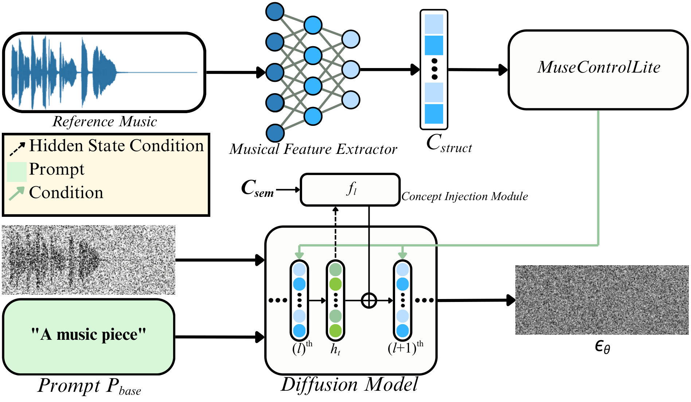
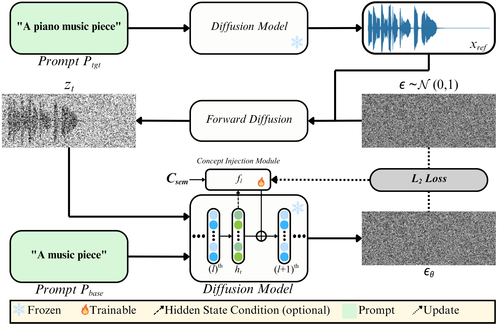

Controllable music editing is to modify high-level attributes while strictly preserving rhythmic and melodic structures. However, this task is challenged by a semantic-structural entanglement: steering methods often degrade structure to achieve editing performance, while structural adaptors suppress semantic responsiveness. We propose AnchorSteer, a framework that disentangles this tension by coupling structural anchoring with self-discovered semantic steering. The proposed approach probes internal representations to extract interpretable, label-free concept vectors via a self-supervised reconstruction objective, isolating attributes without curated data. During editing, these portable, plug-and-play concept vectors are injected into diffusion hidden manifolds while a structural adaptor enforces consistency. Variants for unconditioned and conditioned injections are provided to balance robustness and semantic strength. Experiments on ZoME-Bench and subjective tests show that the proposed framework outperforms both steering-only and anchoring-only baselines, enabling significant semantic transformations with high-fidelity structural preservation.
Abstract
Contributions
- Hidden-state editing direction discovery. We identify reusable, label-free editing directions in the hidden states of text-to-music diffusion models, and propose a self-supervised reconstruction objective that extracts them as interpretable concept vectors usable as portable semantic representations.
- AnchorSteer framework. A structure-aware editing framework that couples self-discovered semantic steering with explicit structural anchoring, directly addressing the semantic-structural trade-off.
- Plug-and-play injection module. Two operating points: unconditioned injection for structural fidelity and conditioned injection for stronger semantic transfer under heavy anchoring.
- State-of-the-art evaluation. Demonstrated state-of-the-art semantic editing with practical structural preservation on ZoME-Bench, validated by both objective metrics and a subjective listening test with 28 participants.
Experimental Results
Spectrogram Comparison

Figure: Spectrogram comparison for Drums→Piano editing. Rows (top-to-bottom): Source, Steering-only, Anchor-only (MuseControlLite), and AnchorSteer (Uncond.). Steering-only introduces harmonics but disrupts temporal alignment, whereas Anchor-only preserves onsets but limits semantic transfer. AnchorSteer maintains the temporal scaffold while successfully injecting piano-like harmonics.
Audio Samples
Diverse Transformations
Showcasing the versatility of AnchorSteer across a wide range of instrument and genre transformations.
Quantitative Comparison
We evaluate AnchorSteer against recent music editing baselines on ZoME-Bench under two editing tasks: instrument change and genre change. Key metrics include CLAP (semantic alignment), GAP (net attribute shift), LPAPS (perceptual distance), and Chroma similarity (structural preservation).
TABLE I — Objective Comparison on ZoME-Bench (Instrument Editing)
| Method | CLAP ↑ | ΔCLAPT ↑ | ΔCLAPS ↓ | GAP ↑ | LPAPS ↓ | Chroma ↑ |
|---|---|---|---|---|---|---|
| SDEdit | 0.260 | 0.135 | 0.011 | 0.124 | 10.525 | 0.213 |
| DDPM-friendly | 0.261 | 0.136 | 0.021 | 0.115 | 9.127 | 0.481 |
| MusicMagus | 0.217 | 0.092 | 0.046 | 0.047 | 7.774 | 0.395 |
| MuseControlLite | 0.250 | 0.126 | 0.013 | 0.113 | 9.828 | 0.488 |
| Ours (Uncond.) | 0.320 | 0.195 | -0.003 | 0.198 | 10.346 | 0.470 |
| Ours (Cond.) | 0.395 | 0.270 | -0.008 | 0.279 | 11.852 | 0.238 |
Ablation Audio Samples
Comparing Steering-only, Anchoring-only, and AnchorSteer (combined) variants.
TABLE II — Subjective Evaluation (MOS, 5-point Likert scale)
| Method | Target Match ↑ | Content Consistency ↑ | Audio Quality ↑ |
|---|---|---|---|
| SDEdit | 2.92 | 2.11 | 3.02 |
| DDPM-friendly | 3.16 | 3.17 | 3.26 |
| MusicMagus | 2.92 | 3.57 | 2.85 |
| MuseControlLite | 3.03 | 3.85 | 2.83 |
| Ours (Uncond.) | 3.18 | 3.45 | 2.60 |
| Ours (Cond.) | 3.60 | 2.94 | 3.31 |
Key Findings
- Synergistic design validated: The Steering baseline achieves high GAP (0.263) but poor structure (Chroma 0.091); the Anchoring baseline preserves structure (Chroma 0.488) but limits editability (GAP 0.113). AnchorSteer achieves both (GAP 0.198, Chroma 0.470).
- State-of-the-art semantic editing: Conditioned injection achieves the highest GAP (0.279) for instrument editing, substantially outperforming all baselines.
- Strong perceptual quality: Subjective listening tests confirm highest Target Attribute Match (MOS 3.60/5) and Audio Quality (MOS 3.31/5) among all methods.
- Plug-and-play reusability: Once discovered, concept vectors can be reused across diverse audio contexts without retraining, enabling portable semantic steering.
Fine-grained Acoustic Analysis — Chroma vs. Mel
Beyond high-level CLAP-based metrics, we provide a controlled chroma-vs-mel analysis to probe isolated acoustic factors such as pitch and timbre. Both methods are compared at matched edit strengths (SDEdit $\sigma{=}0.42$, AnchorSteer uncond. $\sigma{=}0.55$, tuned for comparable edit magnitude). Chroma tracks pitch / harmonic structure; Mel tracks timbre. A successful edit should keep the chroma aligned with the source (structure preserved) while letting the mel diverge from the source toward the target timbre.
-FlvaZQOr2I_seg001Chroma Alignment (pitch / harmonic structure)
Tip: rapidly toggle the two tabs — the figures share the same layout, so visual persistence makes the difference jump out.



Mel-spectrogram (timbre)
Toggle the tabs to flicker-compare: both methods shift the mel toward the piano target, but AnchorSteer does so without compromising chroma.



Takeaway: At matched edit strengths, AnchorSteer preserves chroma (pitch) while still transferring timbre, whereas SDEdit sacrifices chroma alignment to achieve a similar timbre change. This directly supports the chroma-metric results in Table 1 with per-sample visual evidence.
Method Overview
AnchorSteer operates within a pretrained Transformer-based music diffusion model (Stable Audio Open) and comprises two complementary mechanisms:
A. Structure-Anchored Steering Pipeline

The core of our inference pipeline is the synergistic coupling of two distinct mechanisms: (1) Structure-Anchoring Unit: MuseControlLite adaptor injects explicit structural conditions $C_{struct}$ (melody, rhythm, dynamics) via RoPE-augmented decoupled cross-attention to enforce strict temporal alignment. (2) Semantic-Steering Unit: The optimized concept injection modules $\mathcal{F}^*$ are activated to drive the attribute shift.
By integrating these units, we achieve structure-anchored steering, allowing the model to traverse the semantic manifold while remaining tethered to the original musical skeleton:
$$\hat{h}_l = h_l(z_t, t, P_{edit}, C_{struct}) + \lambda_{edit} \cdot f_l^*(h_l)$$
B. Self-Supervised Concept Vector Discovery

We first generate reference samples $X_{ref}$ using a target prompt $P_{tgt}$ (e.g., "A piano music piece"). To capture the semantic attribute, we optimize learnable concept injection modules $\mathcal{F}=\{f_l\}_{l\in\mathcal{L}}$ to reconstruct these references, but conditioned on a generic base prompt $P_{base}$ (e.g., "A music piece"). This forces the modules to learn the semantic gap between the generic and specific contexts:
$$\mathcal{F}^* = \arg\min_{\mathcal{F}} \mathbb{E}_{x \sim X_{ref}, t, \epsilon} \| \epsilon - \epsilon_\theta(z_t, t, P_{base}, \mathcal{F}) \|^2$$
The discovered concept modules capture the semantic direction and can be reused across diverse source audio without re-optimization.
C. Injection Variants
Unconditioned Injection: A standalone learnable vector $v_l$ that applies a static semantic bias independent of the current hidden state, i.e., $f_l(h_l) \equiv v_l$. Simple and efficient, prioritizing structural fidelity under strong anchoring.
Conditioned Injection: A lightweight bottleneck Transformer that dynamically computes the injection based on input features $h_l$. This enables stronger and more robust semantic transfer, effective precisely in the over-constrained regime where anchoring alone yields weak edits.
BibTeX
@misc{chang2026anchorsteerselfdiscoveredconceptinjection,
title={AnchorSteer: Self-Discovered Concept Injection for Structure-Preserving Music Editing},
author={Chih-Heng Chang and Keng-Seng Ho and Chih-Yu Tsai and Kuan-Lin Chen and Yi-Hsuan Yang and Jian-Jiun Ding},
year={2026},
eprint={2605.31053},
archivePrefix={arXiv},
primaryClass={cs.SD},
url={https://arxiv.org/abs/2605.31053},
}